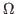

as a function of direction  . To measure that directly we should operate with zero-width point detectors, with instant measurement and unit incident intensity. Practically the quantity we can actually measure - putting a detector in a position covering a certain solid angle for a certain time with a certain incident intensity - is

If
Specifically for the powder diffraction field, historically, this is not usually done because
- as it is normally true with anode sources and point detectors and usual procedures -
the counting times  , the solid angle width
, the solid angle width
 and the incident intensity
and the incident intensity  are considered
constant and therefore go into some 'global scaling' constant that is usually considered arbitrary.
are considered
constant and therefore go into some 'global scaling' constant that is usually considered arbitrary.
However, as we have more sophisticated acquisition methods, we may need revert to the original approach and consider the counts divided by time and angular width as the real observable.